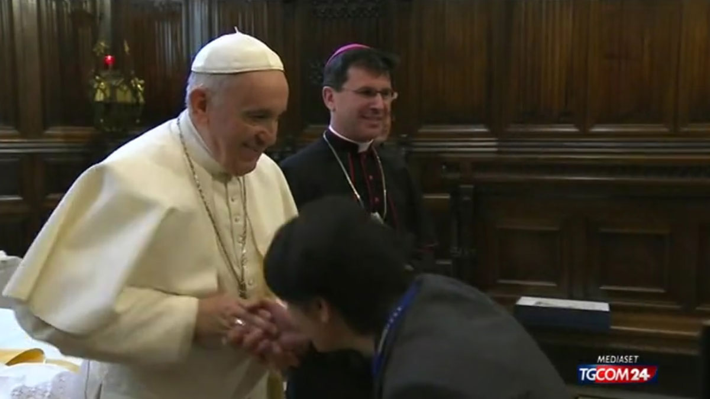

Iglesia Católica creará una comisión para tratar delitos de abusos sexuales que implican a sacerdotes
Estaría conformada por juristas, sacerdotes, psicólogos y probablemente obispos. La idea es que comience a funcionar el próximo mes. El anuncio se hizo un día después de que se conoció que un párroco de Potosí fue encarcelado por denuncias de abuso deshonesto.
